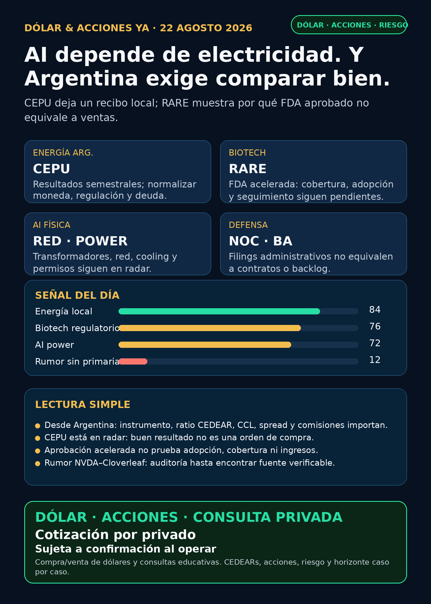

Corte: 22/08/2026, 11:15 (America/Argentina/Mendoza). Edición educativa basada en research nocturno fechado hoy y referencias públicas de dólar. No es asesoramiento financiero ni una indicación de compra/venta. La cartera de Ricardo fue liquidada, devuelta y terminada: no hay posiciones activas ni P&L que reportar. Política vigente: texto y visual solamente; no se generó audio.
Lectura simple del día
Hoy la señal más concreta viene de una empresa eléctrica argentina y una aprobación regulatoria biotech. Central Puerto (CEPU) presentó sus semestrales: es un recibo para mirar cómo opera una generadora local, no una excusa para sacar una conclusión de precio mirando un número aislado. Ultragenyx (RARE) consiguió aprobación acelerada de FDA para GENGLYCOS: es un hito de producto, pero todavía no prueba cobertura, adopción ni ventas.
La tesis estructural de AI sigue igual: el cuello de botella no es sólo chip. También son electricidad, subestaciones, transformadores, switchgear, permisos, agua/cooling, construcción y financiación. Un titular sobre NVIDIA y Cloverleaf apareció como discovery, pero sin primaria o fuente abierta que confirme términos: no se publica como hecho.
Argentina: dólar e instrumento antes que ticker
- Referencias públicas, no puntas ejecutables de broker: BlueLytics informó último update el 21/08 19:46: dólar blue comprador/vendedor $1.517,00 / $1.550,00. CriptoYa a las 22/08 11:12 marcó USDT compra/venta $1.577,38 / $1.587,42.
- CriptoYa muestra MEP AL30 24 horas en $1.528,13 y CCL AL30 24 horas en $1.590,34, ambos con timestamp 21/08 16:59: son registros de cierre previo, no precio intradiario garantizado hoy.
- En criollo: un CEDEAR da acceso local a un activo exterior, pero antes de decidir importan ratio, CCL implícito, spread, volumen, comisiones y plazo de liquidación. Buena empresa ≠ buena inversión al precio actual ≠ buen instrumento para Argentina.
- Fuentes: BlueLytics · CriptoYa.
Ranking educativo por calidad de señal — no es ranking de compra
1) CEPU — resultados locales que exigen normalizar moneda y regulación
- Señal fortalecida / está en radar: el 6-K del 19/08 contiene estados consolidados no auditados al 30/06/2026. Reporta ingresos de ARS 1.040.177 millones, EBITDA ajustado de ARS 393.762 millones y resultado neto de ARS 332.392 millones para el semestre.
- En criollo: confirma actividad financiera de una generadora cotizante en Argentina. No permite comparar alegremente márgenes ni valuación: el documento aclara que prevalece el original CNV en español y comunica cambio de moneda funcional desde el 01/01/2026.
- Riesgo principal: regulación eléctrica, deuda, capex, tarifas, moneda, inflación, precio y liquidez. Un buen semestre nominal no responde por sí solo si el instrumento conviene o no.
- Accionabilidad: local Argentina: BYMA figura en el filing, pero precio, volumen, spread, broker y costos requieren chequeo vivo. Internacional/global: ADR
CEPUen NYSE. Es seguimiento, no compra. - Fuente primaria: Central Puerto 6-K, 19/08.
2) RARE — aprobación acelerada: producto regulado, no ventas automáticas
- Señal fortalecida / está en radar: el 8-K del 19/08 informa aprobación acelerada FDA de GENGLYCOS (
DTX401) para personas desde ocho años con GSDIa. - En criollo: salir de etapa clínica y tener producto aprobado importa, pero todavía faltan centros, cobertura, acceso, seguridad en uso real, adherencia y evidencia confirmatoria. La propia aprobación deja monitoreo poscomercial pendiente.
- Riesgo principal: biotech es alto riesgo; éxito regulatorio no equivale a adopción comercial ni a ingresos probados.
- Accionabilidad: global: Nasdaq
RARE. Local Argentina: CEDEAR, liquidez, spread, costos y disponibilidad pendientes de verificar. No accionable localmente hasta confirmarlo. - Fuentes: Ultragenyx 8-K, 19/08 · ensayo NCT05139316 · seguimiento NCT06636383.
3) AI física / power hardware — tesis estructural, sin hecho nuevo verificable
- Está en radar: el segundo peaje de AI es electricidad física: transformadores, subestaciones, switchgear, generación, interconexión y cooling. No es una sola empresa ni una compra automática.
- Revisados sin señal primaria nueva fuerte:
GEV,ETN,PWR,HUBB,VRT,MOD, Hitachi/Hitachi Energy, Siemens Energy (ENR.DE, no Siemens AG), HD Hyundai Electric y Hyosung. - No verificable por ahora: RSS detectó que NVIDIA estaría en conversaciones con Cloverleaf Infrastructure. Sin comunicado de las partes, filing o fuente secundaria abierta con términos, monto y estado, queda auditoría; no titular.
- Accionabilidad: global: los nombres públicos requieren precio, valuación y liquidez; Argentina: confirmar CEDEAR o vía real antes de hablar de ejecución. Virginia Transformer y Delta Star son privadas: no accionables directo.
Watchlist base — seguimiento rápido
- Revisados sin señal primaria operacional nueva fuerte:
RKLB,NVDA,PLTR,TSM,MU,GOOGL/GOOG,AAPL,HOOD,TSLA,ASML,AVGOyCBRS. RKLByNVDAconservan señales recientes, pero en el corte de hoy no apareció un filing primario nuevo que las cambie. No se agregan precio ni narrativa nueva sin fuente.- Oro:
GLD,GOLDyBno son el mismo objeto. Sin instrumento exacto no corresponde publicar precio o rendimiento. RVI/ Robinhood Ventures Fund I: falta paquete contemporáneo de holdings, NAV, premium/descuento, fees, volumen y acceso. No accionable por ahora.
Energía y salud: recibo de cobertura
- Energía Argentina:
CEPUtiene la señal verificable.YPF,PAM/PAMP,TGSyVISTfueron revisadas: sin primaria operacional nueva fuerte en esta ventana. Están en radar educativo. - Utilities/global:
D,NEE,VST,CEG, nuclear y uranio: revisados sin hito contractual, regulatorio o de resultados primario nuevo. - GLP-1 (
NVO,LLY) y big pharma (PFE,MRK,AMGN,AZN,REGN): revisados sin aprobación FDA/EMA, label, Phase III, guidance o M&A primario fresco para elevar. No reciclar titulares viejos. - RARE es la excepción regulatoria verificable del día: señal de producto, no prueba de demanda.
Radar amplio fuera de la watchlist
- Defensa / guerra física / aerospace:
AVAV,GE,RTX,LMT,NOC,GD,HWM,KTOS,BA,ITAyXARfueron revisados. Los 8-K deNOCyBAson incentivos/transición de management: no son contrato, backlog, margen ni recuperación operativa. Carril revisado, sin señal primaria nueva fuerte de negocio. - Space / orbital AI:
SPCX, RKLB, Starlink y wrappers privados fueron revisados. Sin filing o comunicado verificable nuevo de precio, lock-up, float, liquidez, holdings o acceso. No accionable por ahora. - Autonomía / physical AI: Tesla, Waymo/Alphabet, Uber, Zoox/Amazon y Joby revisados; sin permiso, flota, partner o filing primario nuevo para titular.
- Fintech, agentes de trading y crypto gobernado: sin rail de pagos, regulador, contrato o filing material nuevo. Los agentes son carril educativo: paper/read-only, ledger, límites y aprobación humana. No token viral ni memecoin como oportunidad.
- Wrappers de privadas:
DXYZ,ARKVX,AGIX,XOVR,VCX,FAPMI/ForgeyRVII: falta NAV, premium/descuento, holdings, fees, volumen y acceso. No accionable / no verificado.
Red flags para ignorar
1. Un resultado semestral sin normalizar moneda, regulación y deuda no alcanza para inferir valuación.
2. Aprobación acelerada no equivale a ventas: faltan cobertura, acceso, seguridad y adopción.
3. Un RSS de una posible inversión de AI power no prueba términos ni cierre de operación.
4. Incentivos de management o cambios de controller no prueban contratos, backlog ni mejora de producción.
5. Un wrapper de privadas no es acceso directo a SpaceX, OpenAI o xAI sin holdings, NAV/premium, liquidez y broker verificables.
Qué mirar después
1. CEPU: moneda funcional, deuda, capex, tarifas y liquidez/precio en BYMA antes de pasar de seguimiento a análisis de valuación.
2. RARE: label FDA, cobertura, centros y cumplimiento poscomercial antes de interpretar la aprobación como tesis comercial.
3. NVDA/Cloverleaf: esperar fuente primaria o términos verificables; hasta entonces, no hay hecho publicable.
4. Power hardware: nuevos pedidos, backlog, guidance, lead times e interconexión; separar equipo eléctrico de generación y permisos.
5. Antes de una decisión desde Argentina: verificar subyacente USD, CCL implícito, ratio CEDEAR, spread, volumen y comisiones ese mismo día.
Servicio privado
Dólar · Acciones · Consulta privada. Si querés ordenar dólar, CEDEARs, acciones, horizonte y riesgo, escribime por privado y lo vemos caso por caso. Cotización sujeta a confirmación al momento de operar.
Disclaimer: este reporte es research educativo para decisión humana. No es asesoramiento financiero personalizado ni recomendación de compra o venta.